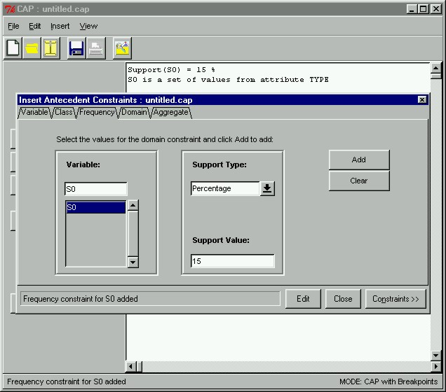

 |
Antecedent Frequency ConstraintNext we need to create a frequency constraint for the antecedent. Here let us specify that the minimum support of the antecedent set is 15%. We input the corresponding values into the window and click the Add button to add the constraint.
|